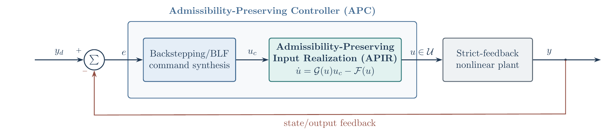
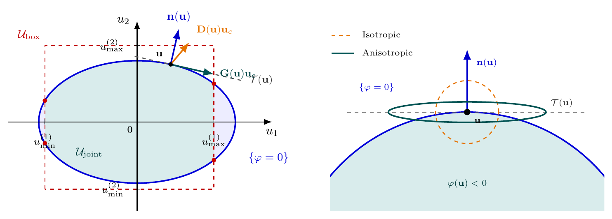

Admissibility-Preserving Control
Overview
Every physical actuator has finite authority: motors saturate, control surfaces hit their stops, and several actuators often share a single power budget. The usual approach designs a nominal controller and then clips its output, which makes the applied input nondifferentiable exactly where the constraint becomes active.
My work develops Admissibility-Preserving Control (APC), in which the physical input is generated by an Admissibility-Preserving Input Realization (APIR), a dynamical system whose admissible set is forward invariant by construction. Because the realized input is smooth and stays strictly inside its limits, it can be embedded directly in backstepping and barrier-Lyapunov designs, giving tracking guarantees with actuator, rate, output, and joint capacity constraints respected for all time.
Key Contributions
Continuously differentiable input realization that keeps the input strictly inside asymmetric actuator limits, with interpretable tuning parameters.
Backstepping-based APC for strict-feedback nonlinear systems without an input-to-state stability assumption on the open-loop plant.
Simultaneous enforcement of actuator limits and time-varying output constraints through a smooth barrier coordinate.
Cascaded realization for simultaneous actuator magnitude and rate constraints.
Anisotropic realization for multi-input systems under joint capacity constraints, with a proven reduction in the required command.
Provably safe control for constrained nonlinear systems with bounded inputs.
APC for Strict-Feedback Nonlinear Systems with Asymmetric Actuator Constraints
Saurabh Kumar, Shashi Ranjan Kumar, and Abhinav Sinha, International Journal of Robust and Nonlinear Control, 2026 (under review).

APC for Multi-Input Systems with Joint Capacity Constraints
Saurabh Kumar, Lohitvel Gopikannan, Shashi Ranjan Kumar, and Abhinav Sinha, ArXiv, 2026.

Relevant Publications
Journal Papers
Saurabh Kumar, Lohitvel Gopikannan, Shashi Ranjan Kumar, and Abhinav Sinha, Admissibility-Preserving Control for Multi-Input Systems with Joint Capacity Constraints, ArXiv, 2026.
Saurabh Kumar, Shashi Ranjan Kumar, and Abhinav Sinha, Admissibility-Preserving Control for Strict-Feedback Nonlinear Systems with Asymmetric Actuator Constraints, International Journal of Robust and Nonlinear Control, 2026 (under review).
Saurabh Kumar, Shashi Ranjan Kumar, and Abhinav Sinha, Provably Safe Control for Constrained Nonlinear Systems with Bounded Input, ArXiv, 2025 (under review).